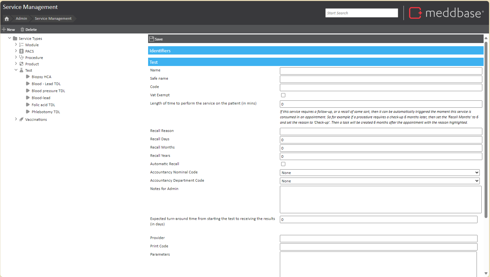

Meddbase includes a fully integrated electronic pathology system that connects directly with selected pathology labs, including HCA (Hospital Corporation of America) and TDL (The Doctors Lab). This integration allows users to raise lab request forms either ad hoc or during an appointment.
If the appointment specifies tests (e.g., a health assessment requiring a profile blood test), the lab form will pre-populate with the required tests based on how the service is configured.
The TDL integration also includes a predefined price list containing a wide range of tests provided as services. However, this list is comprehensive but not exhaustive, any tests you provide that is not specified on the TDL pricelist can be created.
For more support with setting up Pathology, please see How to set up Pathology.
This article explains how to add a new TDL test as a service and ensure it is included in a price list for proper use.
Click New in the top left corner, then select Test.
Fill in the following details:
Example setup:
Click the Save icon.

To ensure the test is provided, it must be added to a price list or a provide services rule on a Charge Band in the Billing Rules area. For more details on how to set this up, please refer to How to make new Services available through Billing Rules.